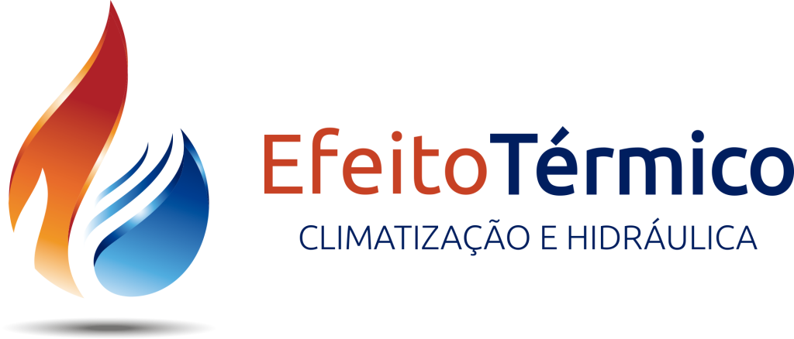
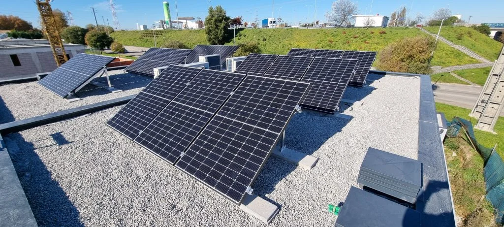

Temperatura e ar interior.
Ar condicionado, ventilação e pavimento radiante entre as áreas apresentadas pela empresa.

Climatização · Hidráulica · AVAC
Casa, comércio ou indústria. Organize o que procura antes de falar sobre a solução técnica.
Preparar o ponto de partida
As áreas da empresa
Climatização, hidráulica e energias renováveis fazem parte da apresentação oficial. A escolha de equipamentos exige avaliação do espaço.
Ar condicionado, ventilação e pavimento radiante entre as áreas apresentadas pela empresa.
Bombas de calor e soluções solares fazem parte dos serviços publicados. O dimensionamento depende de cada utilização.
A empresa apresenta energia fotovoltaica. A viabilidade de uma instalação precisa de análise técnica.
Experimente o percurso
Este exemplo organiza uma primeira conversa. Não calcula potências, poupanças ou preços e não recomenda um equipamento.
Simulação local · nada é enviadoUma proposta de Ricardo Almeida
O vosso site já apresenta várias áreas e uma imagem de instalação. Nesta proposta, começo pela situação do visitante e ajudo-o a reunir informação para a conversa. A solução técnica continua do vosso lado.
Experimentar as mudançasSeparei habitação, comércio e indústria. Esta escolha dá contexto à necessidade, antes de o visitante ter de conhecer um equipamento.
O percurso pergunta o que a pessoa quer avaliar. Evita transformar uma preferência numa recomendação técnica automática.
Juntei as escolhas num resumo e indiquei o que falta recolher. A eventual ligação ao vosso processo de pedidos seria definida convosco.
O que proponho filmar
Proponho filmar uma instalação que possam divulgar: preparação do local, colocação do equipamento e uma verificação final explicada pela equipa. O filme poderia ficar junto do serviço correspondente, para mostrar o que está incluído no trabalho. A escolha da instalação, autorizações e âmbito seriam combinados antes de filmar.
Na Canvas Custom Furniture, fiz a filmagem, a edição e o website com integração do filme. As imagens mostram a oficina e a execução do trabalho. O visitante pode ver a execução para além de ler a apresentação da empresa.
Ver o projeto CanvasGostava de perceber que trabalhos querem destacar e como recebem os pedidos hoje.